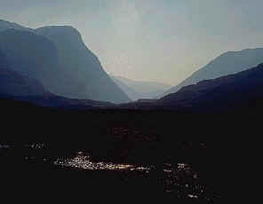
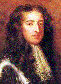

The Massacre of Glencoe
Mort Ghlinne-Comhainn
13th February 1692
Tune
Mort Ghlinne-Comhainnfrom Simon Fraser Collection N°57 (first published 1816)
Sequenced by Christian Souchon
Sheet music - Partition
|
-In February 1692 the McDonalds of Glencoe (several hundred people) whose Chief Alastair had fought with
Bonnie Dundee
, delayed swearing allegiance to King William and were traitorously slaughtered by their longtime enemies, the Campbells, enlisted by the King to that end, in violation of the strict code of hospitality.
The Lord Advocate John Dalrymple's orders to Clan Campbell read as follows: "You are hereby ordered to fall upon the rebels, the M'Donalds, of Glencoe and putt all to the sword under seventy. You are to have special care that the old fox and his sons doe upon no account escape your hands. You are to secure all the avenues, that no man may escape.... This is by the King's special command, for the good of the country, that these miscreants be cutt off root and branch. See that this be putt in execution without feud or favour, else you may expect to be treated as not true to the king's government, nor a man fitt to carry a commission in the king's service. Expecting you will not faill in the fulfilling hereof as you love yourself, I subscribe these with my hand. Master of the Stair (John Dalyrmple)." The BBC Homepage "History" sums up the tragedy as follows: William II and III's policy in Scotland was to force clan chieftains to subscribe an oath of loyalty to the crown. MacIain of Glencoe (a sept of the MacDonald's) was slow in doing so and eventually missed the deadline by a matter of days (he was still willing to swear the oath). Government forces consisting, in part, of the MacDonald's bitterest enemies, the Campbells, billeted themselves upon the Glencoe population, in February 1692, and then turned against the inhabitants, massacring thirty-eight of their number and forcing countless others into the snow-topped Scottish mountains (where many died). The attack was condemned in the Scottish parliament and led to the fall of the government of the Earl of Stair. |
-En février 1692 les McDonald de Glencoe (plusieurs centaines d'hommes) dont le Chef Alastair avait combattu avec
Bonnie Dundee
, tardèrent à jurer fidélité au roi Guillaume et furent massacrés par leurs ennemis de toujours, les Campbell, que le roi avait chargés de cette besogne, au mépris du strict code de l'hospitalité.
Les ordres transmis aux Campbell par le Lord Avocat John Dalyrmple étaient les suivants: "Par la présente je vous ordonne d'attaquer les rebelles, les McDonald de Glencoe et de passer au fil de l'épée tous ceux de moins de soixant-dix ans. Vous veillerez à ce que le vieux renard (Alastair) et ses fils ne vous échappent sous aucun prétexte... C'est la volonté expresse du Roi que, pour le bien du pays, ces mécréants soient exterminés, branches et racines. Veillez à ce que cela soit exécuté sans malveillance ni faveur, sauf à vous attendre à être traité en sujet félon envers l'autorité royale ou en homme incapable de remplir une mission au service du roi. J'attends que vous ne manquiez pas d'exécuter la présente dans votre propre intérêt. Et je signe la présente de ma main. Le "Cadet des Stairs" (John Dalyrmple)". La page "Histoire" de la BBC résume ainsi la tragédie: La politique adoptée par Guillaume III en Ecosse fut de contraindre les chefs de clans à lui prêter serment d'allégeance. MacIain de Glencoe (une branche des MacDonald's) tarda à le faire et laissa passer de quelques jours le terme fixé (bien que sa volonté ait été de se conformer à cette obligation). Des troupes anglaises, en grande partie des Campbells, les ennemis les plus acharnés des MacDonalds, se firent cantonner chez les habitants de Glencoe, en février 1692, puis se retournèrent contre leurs hôtes, massacrant trente-deux d'entre eux et forçant de nombreux autres à s'enfuir dans les montagnes couvertes de neige où beaucoup moururent. Cette attaque fut condamnée par le Parlement Ecossais et conduisit à la chûte du ministère du Comte de Stair. |


|
1. Farethee well my glen beloved!
Swathed in shroud of death today; For thy sake, the bard grief moved, Will be ever and for aye. There thy heroes, proud and stately, 'Mong the heaps of slaughtered lie; And the homes are ruined straitly, Where our childhood's days went by. 2. Merry were we in the gloaming, Singing songs with light hearts gay; Little reck'd we what was coming, Us to part ere break of day. Some in beds sore wounded lying, Some in snow wreaths frozen stiff, In the woods the remnant flying, For their dead overwhelmed with grief. 3. Last night, wakened by the shrieking, Lightning lamp I searched around, And my son's dead body, leaking Blood from every wound,l found. Would that I the first had fallen, Ere the dark fate I had seen, Which my loved ones had befallen, At the hands of villains mean. 4. When the flames around each dwelling Rose into the glaring sky, What bard's song avails for telling The dread sight that met the eye? Little boys their last breath yielding; Infants from their mothers torn; Children crying, "Who'll give us shielding? Whither shall we go, forlorn?" 5. Blood of brave Clan Donnel flowing, In the dark tempestuous night; And no place of safety showing, Whither they could wing their flight. Had our youth not slept so deeply, When the hard steel laid them low, Blood had not been spilled so cheaply, Nor the foe had triumphed so. 6. Slain myslef in wrathful blindness I would rather be, than slay Trusting men, who showed such kindness- In the beds whereon they lay. Never saw I such a rabble, Cunning , merciless, like those who sat with us at our table, As our friends and proved as foes. 7. Many a maiden, fair and tender, Without home or kin is left, In the desert cold to wander, Of all earthly joy bereft. Many a mother desolated; Sons and husband mourning sore; For a snowy burial fated; Frozen in each other's gore. 8. Mournful is thy fate uncommon, All thy brave sons killed outright; All they cattle with the foeman, All they dwellings ruined quite. Fare-thee-well, my glen beloved! Swathed in shroud of death today; For thy sake the bard grief-moved Will be ever and for aye. Source: CAOL ILA MUSIC |
1. Soraidh leat, a ghleann mo ghraidh!
'Tha ridht' an diugh a'd' leine bhais; As do dheigh gu brath gu brath, Cha bhi'm bard ach deurach bronach. Tha do ghaisgich uaibhreach staiteil, 'Measg na mhortadh air an aireamh; S' tha do thighean 'nis nan larach, Far an d'araicheadh 'nar noig sinn. 2. Anns an fheasgar bha sinn aobhach, 'Gabhail orain shunntach, aotram, Och; mo dhiubhail 's beag a shaoil sinn, Bhi cho sgaoilteach fo am eiridh. Gum giodh cuid nar leabaidh leointe, Cuid 's na cuidhean sneachda reoidhte, 'S anns a' choill' gu 'm biodh an corr dhinn, Caoidh le deoir an dream a dheug dhinn. 3. Dhuisg an raoir an gearan geur mi, Las mi'n lochran air dhomh eiridh 'S chunnaidh mi mo mhac 'na shleitann rich, Fhuil ga threigsinn 's e gun deo, Och nach mis' a thuit a cheud fhear, Chum 's nach fhaicear leam-sa m' eudail, Anns an leabaidh leointe, reubte, Leis na beisdean bha gun trocair. 4. 'Nuair a dh' eirich lasradh gruamach, Soillear dealrach, dian ma 'n cuairt dinn, Sinne fhuair an sealladh fuathsach, Cha chuir duan do bhard an ceill e. Gillean og gun anail chitear, Leanaban maoth o' m mathair gan spionadh, 'S balachain bheag gun stath ri criosgail, 'Co bheir dion duinn c' ait' an teid sinn.' 5. Gu bhi sabhailt' cha robh doigh air, Oir b' i n-oidhch' bha fiadhaich dobhaidh, Anns am faca fuil Chlann Donuill, Air a dortadh 's iad gun eiridh. Ach mar biodh ar n-oigridh suain each, 'N uair a bhuailt' an stailinn chruaidh orr', Cha robh n' fhuil air lar gun truailleadh, S' cha robh buaidh aig luchd na h-eucoir. 6. Ach bhi moirte's mor gu 'm b' fhearr leam, Na gu'n doirtinn fein le m' lamhaibh, Fuil an dream bhiodh ruim cho baigheal, 'S iad gun sgath gu suaineach samhach. Riamh cha 'n fhacas dream cho seolta, Dream cho fuilteach air bheag trocair, Ris na daoin' a shuidh aig bord leinn, 'S a ghabh comhnuidh leinn mar chairdean. 7. 'S iomadh nighneag fhoinnidh, Dh' fhagar leo gun aite comhnuidh, Anns an fhasach fhuair gun solas, Gun neach beo ann ghabhas truas dhiu, 'S iomadh mathair tha 'n diugh fo leireadh, Caoidh gun fhios a mic 's a' cheile, 'S iadsan reoidhte 'm fuil a cheile, Sneachd ag eiridh ard mu 'n cuairt orr'. 8. 'S bochd da-rireadh mar a dh-eirich, Do chuid ghaisgeach air an reubadh, Aig do naimhdean do chuid spreidhe, 'S iad nan sleitrich do chuid chomhnuidh. 'Soraidh leat O gleann mo ghraidh! Tha ridht' an diugh a' d' leine bhais; As do dheigh gu brath gu brath, Cha bhi m' bard ach, deurach, bronach. |
1. Adieu donc, vallée si chère!
La mort te revêt d'un suaire; Le barde en son chant de deuil, Pleure à jamais tous ces cercueils. Ici reposent sans nombre, De fières et nobles ombres; Il ne reste que tisons De ce qui fut nos maisons . 2. Saluant l' aube charmante Par des chansons confiantes, Qui eût, pour la nuit tombante, Un tel massacre prédit? Certains dans leurs lits succombent, Ou dans la neige s'effondrent, La forêt sera la tombe Du reste qui s'est enfui. 3. Des hurlements me réveillent, Et j'allume une chandelle: Quel est donc ce corps sans vie Baignant dans son sang? C'est mon fils! Me fallait-il donc lui survivre, Avec au coeur la plaie vive D'avoir vu des assassins En train d'immoler les miens? 4. Quand l'incendie qui fait rage En tout lieu le ciel embrase, Règne une horreur que nul barde Ne peut décrire en son chant. Des enfants qui rendent l'âme, Arrachés aux bras des femmes; Et des orphelins qui clament: "Où nous tourner à présent?" 5. McDonald, race vaillante, Ton sang coule en la tourmente; Pour te protéger du mal, Point d'asile en ce jour fatal. Plus rude eût été l'affaire Pour ceux qui vous égorgèrent, Si vos fils n'avaient dormi Et donné chèrement leur vie . 6. J'aimerais mieux, quand bien même M'aveuglerait tant de haine, La mort plutôt que la peine De tuer mes hôtes dans leurs lit . Vit-on jamais tels complices: La ruse s'alliant au vice, Jusque sous nos toits se glisse Pour se muer en ennemie? 7. A quelle joie peut prétendre Cette fille, belle et tendre, Restée sans toit, sans parents, Qui s'en va dans la neige, errant. Plus d'une infortunée mère Pleure ses fils et leur père; Leurs corps en la neige enfouis, L'un contre l'autre, meurtris. 8. Fut-il destin plus funeste? De ta race rien ne reste Et tes cheptels sont pillés. Toutes tes maisons sont brûlées. Adieu donc, vallée si chère! Que la mort couvre d'un suaire; Le barde en son chant de deuil, Pleure à jamais tous ces cercueils. Traduction Christian Souchon (c) 2006 |
|
"The poet, in the 'Massacre of Glencoe' as handed by the editor's progenitor, addresses himself to the owl, as the only witness of a deed perpetrated under silence of night and pretends he is telling from her narration every circumstance of barbarity relating to this melancholy event."
(Note to this tune by Captain Simon Fraser in his Collection of Highland Melodies- The verse with the owl is obviously missing). |
"Le poète, dans le 'Massacre de Glencoe' tel qu'il m'a été transmis par mon père, s'adresse à la chouette, seul témoin des crimes perpétrés dans le silence de la nuit et fait comme si elle lui rapportait tous les détails barbares de cet événement lugubre."
(Note pour ce morceau du Capitaine Simon Fraser dans sa "Collection de Mélodies des Highlands" - il manque de toute évidence le couplet avec la chouette ) |